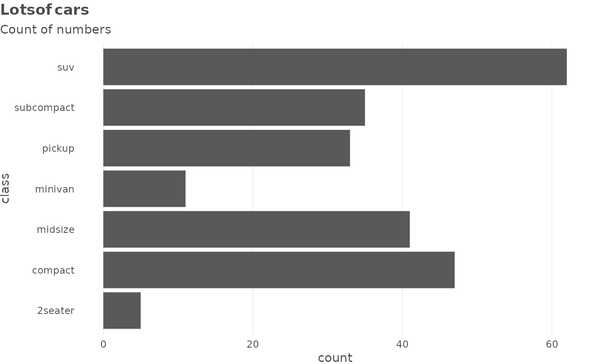
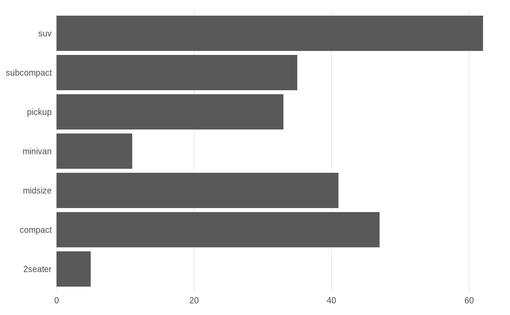
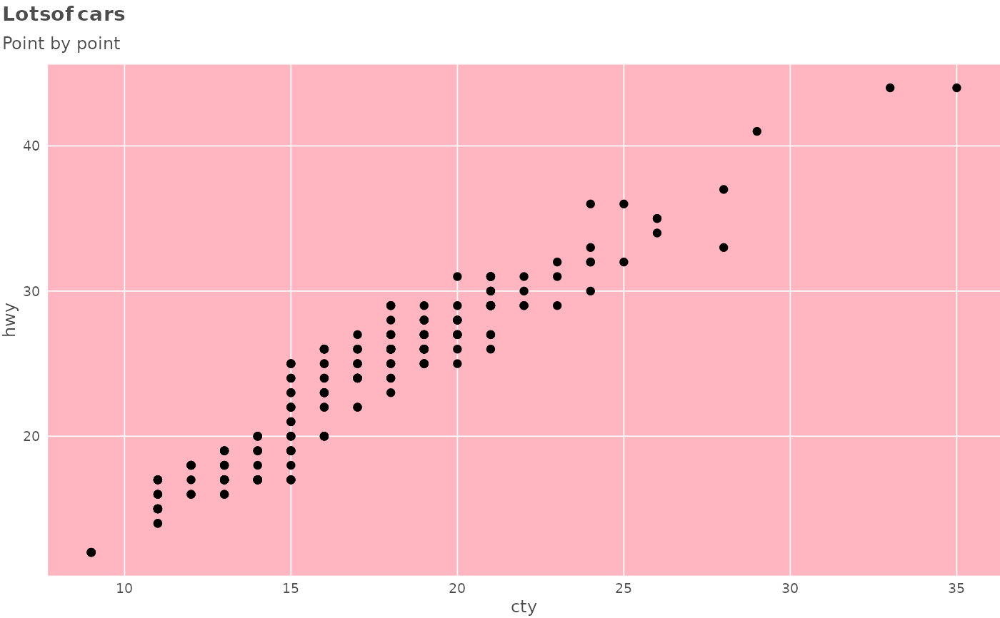

A wrapper around theme() which provides several shortcuts to setting common options
and several defaults. See more in Details.
theme_schola( gridlines = c("y", "x", "both", "scatter"), base_size = 11, family = "Roboto Condensed", title_family = "Roboto", side_margin = 6, plot.title.position = "plot", axis.title = ggplot2::element_blank(), multiplot = FALSE, ... )
Arguments
| gridlines | Whether to display major gridlines along |
|---|---|
| base_size | Numeric text size in pts, affects all text in plot. Defaults to 11. |
| family | font family to use for the plot. Defaults to |
| title_family | font family to use for the title of the plot. Defaults to |
| side_margin | size of left and right margin around plot, in pts. Defaults to 5. Set to 0 to align flush with text in a Word document. |
| plot.title.position | where to align the title. Either "plot" (the default, difference from |
| axis.title | same as in theme(), but with a default of |
| multiplot | if set to TRUE, provides better styling for small multiples created using |
| ... | Other parameters to be passed to |
Value
a ggtheme object
Details
In particular, the theme:
displays only major gridlines, allowing you to quickly switch which ones; gridlines are thinner, panel has white background
provides quick option to draw a scatter with grey background
switches defaults for title alignment
turns axis labels off by default: in practice, x axes are often obvious and y axes are better documented in a subtitle
sets backgrounds to a schola-style shade
sets plot title in bold and 120% of base_size
All the changed defaults can be overriden by another call to theme().
See "Making charts" vignette for more complex examples: vignette('charts', package = 'reschola').
Note
The default fonts - Roboto and Roboto Condensed - are contained in this package and
can be registered with the system using import_fonts(). You should then install them onto your
system like any font, using files in the directories described in the import_fonts() messsage.
You can also set the reschola.loadfonts option to TRUE for the fonts
to be registered at package load.
See also
Other Making charts:
flush_axis
Examples
library(ggplot2) # NB when `theme_schola()` is used in these examples, fonts # are set to 'sans' to pass checks on computers without the # sans included. If you have these fonts (see Note) you can # leave these parameters at their default values. # the basic plot for illustration, theme not used p <- ggplot(mpg) + geom_bar(aes(y = class)) + labs(title = "Lots of cars", subtitle = "Count of numbers") # using `theme_schola()` defaults p + theme_schola("x", family = "sans", title_family = "sans")# in combination with `flush_axis`: p + theme_schola("x", family = "sans", title_family = "sans") + scale_x_continuous(expand = flush_axis)# scatter ggplot(mpg) + geom_point(aes(cty, hwy)) + theme_schola("scatter", family = "sans", title_family = "sans") + labs(title = "Lots of cars", subtitle = "Point by point")# Smaller text, flush alignment ggplot(mpg) + geom_point(aes(cty, hwy)) + theme_schola("scatter", base_size = 9, side_margin = 0, family = "sans", title_family = "sans") + labs(title = "Lots of cars", subtitle = "Point by point")# Override defaults changed inside `theme_schola()` ggplot(mpg) + geom_point(aes(cty, hwy)) + theme_schola("scatter", base_size = 9, side_margin = 0, family = "sans", title_family = "sans") + labs(title = "Lots of cars", subtitle = "Point by point") + theme(panel.background = element_rect(fill = "lightpink"))